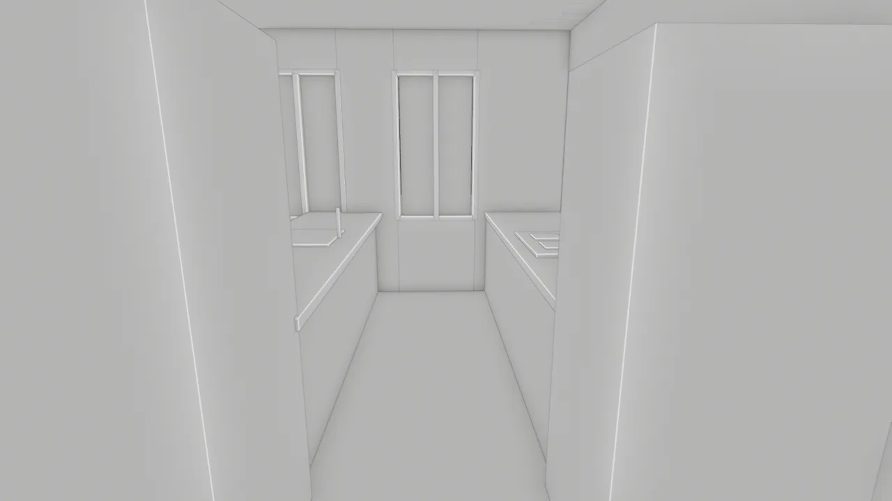
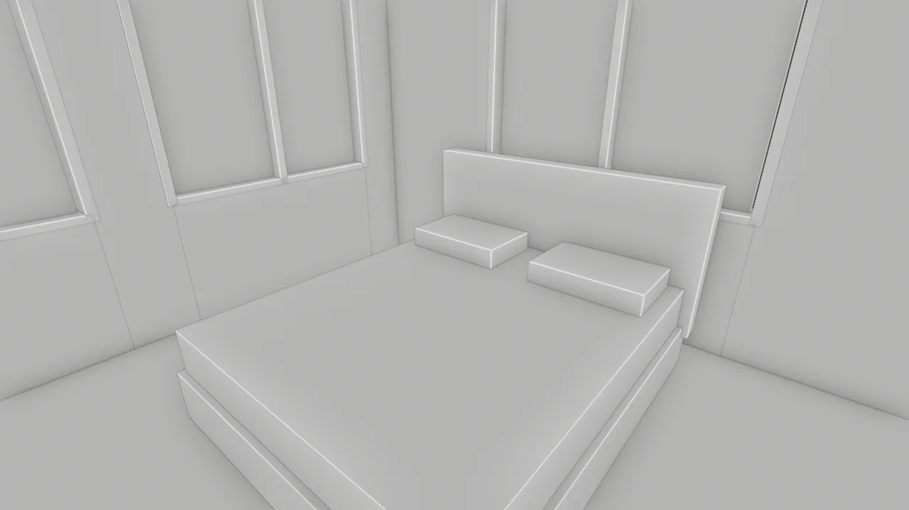

How do you turn a raster floor plan into an accurate Blender model?
Calibrate the image from one drawn dimension, trace every wall, door and window into a coordinate file, and build the model from that trace. Then overlay the model on the drawing before you animate anything. In ArchiGen's documented test, that overlay caught a misplaced kitchen and partitions up to 1.4 m out.
The camera glided through the front door, paused in the living room and never clipped a wall. It was a lovely walkthrough of an apartment that does not exist. Lay the model over the floor plan and the drawing politely disagrees: the kitchen is on the wrong side, and the hall has drifted by more than a metre.
This is the story of that test, run in September 2026 on one of the projects we are working on: a multi-building apartment scheme that, at this stage, exists only as raster floor-plan images. No CAD, no sections, no elevations. Just pictures of plans, and a goal of a walkthrough that matches them one to one.
The good news is that the audit worked and the fix was simple. The modeling was done by an AI coding agent (OpenAI's Codex) driving Blender 5.2.0 LTS through Python, directed and reviewed by ArchiGen's publisher. The project stays unnamed, and the plan diagram below is redrawn from our trace data, not the original sheet.
A clean walkthrough proves the camera missed the walls. It does not prove the walls are in the right place.
Start with what the drawings actually give you
We had nine raster floor-plan sheets for three buildings, 1192 to 1638 pixels wide. That is plenty for a layout and not enough for a building. So before modeling, split what the sheets establish from what you will have to assume.
| From the drawings | Assumed, to confirm later |
|---|---|
| Room layout and wall positions | Floor-to-floor height (3.05 m) |
| Door and window locations | Door heights (2.20 m) |
| Kitchen and bath fixture footprints | Window sills (0.85 m) and heights (1.60 m) |
| One explicit dimension: a 24 ft bay | Wall build-ups, slabs and terrain |
That little table does a lot of work later. It keeps a model that is exact in plan from quietly passing off its section as fact.
Pass one: plausible, and a little loose
The first model covered the whole site. Scale came from one building's overall envelope, about 30.07 m, split into equal apartment bays of about 7.52 m with a nominal wall allowance. Partitions went in by hand from the images, and a corridor was later widened so the camera had room to move.
It read beautifully from inside. The walkthrough stayed on the floor, cleared every ceiling and used real doorways. What none of those checks asked was the only question that mattered: are the walls where the drawing puts them?
The audit: put the model on the plan
The brief was a walkthrough that is one to one with the floor plans, so the test was refreshingly direct. Draw the modeled partitions over the original sheet and look. For the filmed three-bedroom unit, the overlay found five real errors.
- The kitchen was on the wrong side. Both counter runs sat east. The plan puts them west, with the stove, sink, pantry and refrigerator in drawn positions.
- The hall had wandered. Hand-entered partitions, plus the corridor widening, had moved the bedroom divider and hall by roughly 1 to 1.4 m.
- The bathroom door was in the wrong wall. The drawn opening is on the bedroom's west side, not beside a closet.
- A doorway had been invented. The model linked the shared stair straight into the apartment. The plan shows separate apartment and stair doors.
- So had a stair connection. One upper-floor segment relied on a stair-to-unit link the drawings never show, so it was cut from the corrected video.
Every one of these errors passed the camera checks. That is the lesson worth keeping: geometry checks tell you the model is navigable, and only the drawing tells you it is right.
The fix: trace first, then model
The correction swapped judgment for coordinates, and it is very repeatable. Scale came from the one dimension the sheet actually states: a 24 ft bay spanning 233 pixels, about 0.0314 m per pixel. That beats dividing a gross width into equal bays, because it uses a number the drawing commits to.
Next, the unit was traced by hand into a data file: 25 wall segments, 9 doors and 10 windows, each stored as pixel endpoints, plus the unit outline. Wall thicknesses came from the drawn wall bands, about 125 mm internal and 190 mm external. The file even states its own tolerance: a line placed on a raster image is good to about 2 to 3 pixels, or 0.06 to 0.09 m.
The corrected unit was rebuilt from that file as 291 new objects. The 52 superseded objects went into a hidden archive collection instead of the bin, so the before state is still there to compare against.

Three checks, three different questions
The saved file then faced three checks, and each asks a different question. First, does the model match the trace? All 25 modeled walls were compared with their traced centerlines, and the largest centre error was under 0.00001 m. That confirms the build. It does not grade the trace.
Second, can a person walk it? The 90.4-second route, 2170 frames at 24 fps through an 18 mm lens at 1.65 m eye height, found no missing floor, no collisions, no camera wall crossings and nothing under 2.15 m overhead. A second pass of 2169 half-frame samples on the saved file agreed. Third, do the doors behave? All six crossings happened with the leaf fully open, and every room view was taken with the doors behind the camera shut.
These checks cover one route through one unit. They are not code, accessibility or construction checks, and they never pretend to be.

What is still open, and why that is useful
We did not end with a certified 1:1 model, and the record says so plainly. That is a feature. You know exactly what to ask for next.
The clearest open item is area. The traced wall-centerline footprint is 122.29 m², while the plan's labelled gross area converts to 127.83 m². Different conventions explain some of that gap, but it has not been reconciled against dimensioned drawings, and the labelled area was deliberately not used to stretch the trace to fit.
Only one unit has been traced and rebuilt so far. The other units keep their earlier, approximate partitions, and every height is still an assumption from the table above. A dimensioned PDF or CAD set, wall sections and an opening schedule would close those gaps.
Our take: six habits that make it work
- Calibrate from a stated dimension. A dimension string on the sheet beats any width you divide yourself.
- Trace into data, not straight into the model. A file of endpoints with a tolerance can be checked, rerun and argued with.
- Overlay before you animate. One look with the drawing under the model can save a beautiful walkthrough of the wrong apartment. The same habit catches geometry drift in AI renders later on.
- Keep drawn and assumed apart. Write invented heights next to measured dimensions, where everyone can see them.
- Archive, do not delete. Superseded geometry is your before-and-after evidence, and part of a provenance package anyone can check.
- Reconcile areas instead of stretching to them. A mismatch is a question for the drawings, not a scale factor.
There is a bigger shift hiding in this small test. When an AI agent does the tracing and the modeling, the architect's job moves from drawing walls to checking them, and the overlay becomes the most valuable step in the workflow.
Next for this model is the rendering stage, and we have already written that one up: the Blender and ComfyUI test starts from a model like this and shows what happens when AI refines the images. If you would rather hand the plan straight to an image model, the floor-plan rendering comparison shows how two of them handle the same kind of drawing.
The first model sold the idea. The audit made it true.
Evidence note: this article reports a documented ArchiGen test run 8 to 10 September 2026 on one of the publisher's own projects, which is not named. Tools: Blender 5.2.0 LTS, scripted through Python by an AI coding agent (OpenAI Codex) under the publisher's direction and review. Inputs: nine raster floor-plan sheets; one three-bedroom unit traced and rebuilt. Preserved artifacts: the trace file with pixel endpoints and stated uncertainty, the model and route audits, the saved-scene validation, file checksums, the corrected Blender file and the before and after overlay. Figures 2 and 3 are actual model output. Figure 1 is redrawn from the trace data. This is a single-unit study, not a benchmark or a certified survey.